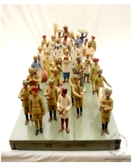

🔇 Is bhasha me is vastu ka audio abhi uplabdh nahi hai.
9. LXX - 214: विवाह जुलूस दृश्य

9. LXX - 214
विवाह जुलूस एक औपचारिक परेड होती है जिसमें वर और उनके साथियों, परिवार और दोस्तों सहित, उत्सवपूर्वक विवाह स्थल की ओर जाते हैं। यहाँ वर 34 व्यक्तियों के साथ एक लकड़ी के तख्ते पर है। वर घोड़े पर सवार है। विवाह जुलूस विवाह उत्सव का एक महत्वपूर्ण हिस्सा होता है, जिसमें अक्सर संगीत, नृत्य, आतिशबाजी और धूमधाम शामिल होती है, जो दूल्हे की दुल्हन से मिलने की यात्रा और दो परिवारों के मिलन का प्रतीक होती है। यह विवाह जुलूस दूल्हे के निवास से विवाह स्थल की ओर बढ़ता है, जो अक्सर दुल्हन के परिवार के घर में होता है। कई संस्कृतियों में विवाह जुलूस से संबंधित अपनी विशिष्ट परंपराएँ और रीति-रिवाज होते हैं, जो उनके विश्वासों और मूल्यों को दर्शाते हैं।
9. LXX - 214: Wedding Procession Scene
9. LXX - 214
A wedding procession is a ceremonial parade in which the groom, together with his companions, family and friends, travels festively towards the wedding venue. Here the groom is shown with thirty-four figures upon a wooden board. The groom rides a horse. The wedding procession is an important part of the marriage celebration, often involving music, dance, fireworks and pageantry, symbolising the groom's journey to meet his bride and the union of two families. The procession moves from the groom's residence towards the wedding venue, which is often at the home of the bride's family. Many cultures have their own distinctive traditions and customs connected with the wedding procession, reflecting their beliefs and values.
9. LXX - 214: వివాహ ఊరేగింపు దృశ్యం
9. LXX - 214
వివాహ ఊరేగింపు అనేది ఒక లాంఛనప్రాయ ఊరేగింపు, ఇందులో వరుడు తన సహచరులు, కుటుంబం మరియు స్నేహితులతో కలిసి ఉత్సాహంగా వివాహ వేదిక వైపు వెళతాడు. ఇక్కడ వరుడు 34 మంది వ్యక్తులతో కలిసి ఒక కలప పలకపై ఉన్నాడు. వరుడు గుర్రంపై స్వారీ చేస్తున్నాడు. వివాహ ఊరేగింపు వివాహ వేడుకలో ముఖ్యమైన భాగం, ఇందులో తరచుగా సంగీతం, నృత్యం, బాణసంచా మరియు ఆడంబరం ఉంటాయి; ఇది వరుడు వధువును కలవడానికి చేసే ప్రయాణానికి మరియు రెండు కుటుంబాల కలయికకు ప్రతీక. ఈ ఊరేగింపు వరుని నివాసం నుండి వివాహ వేదిక వైపు సాగుతుంది, అది తరచుగా వధువు కుటుంబ ఇంట్లో ఉంటుంది. అనేక సంస్కృతుల్లో వివాహ ఊరేగింపుకు సంబంధించి వారి స్వంత ప్రత్యేక సంప్రదాయాలు మరియు ఆచారాలు ఉంటాయి, అవి వారి విశ్వాసాలు మరియు విలువలను ప్రతిబింబిస్తాయి.
ایلایکسایکس-214: جلوسکامنظر
ایلایکسایکس-214
یہ ایک کھڑی ہوئی جاپانی خاتونمایکوکا مجسمہ ہے جو دونوں ہاتھوں میں چھتری تھامے ہوئی ہے۔ اس کے سینے پر گلابی رنگ کے موتیوں کی مالا ہے جو بیلٹ کی مانند دکھائی دیتی ہے۔ مایکو نے پھولوں کے نقش و نگار والا لباس پہنا ہوا ہے اور سر پر پھول لٹک رہے ہیں۔مائیکو دراصل کیوٹو میں گیشا بننے والی طالبہ لڑکیوں کو کہا جاتا ہے۔ انہیں جاپانی رقص سیکھنا ضروری ہوتا ہے، اسی وجہ سے انہیں مایکو کہا جاتا ہے۔مائی کا مطلب رقص اور کو کا مطلب لڑکی ہے۔گیوشا کے گڑیا نما مجسمے جاپان کی خوبصورت خواتین کی نمائندگی کرتے ہیں، جو رقص گائیکیگفتگو اور دیگر صلاحیتوں کے ذریعے تفریح فراہم کرتی ہیں۔ ہر جاپانی گیوشا گڑیا کا لباس ریشم سے نہایت باریک کاریگری کے ساتھ تیار کیا جاتا ہے اور یہ حقیقی جاپانی گیوشا کے کیمونو جیسا دکھائی دیتا ہے۔تمام جاپانی گیوشا گڑیا سیاہ لکڑی کے چبوترے پر نصب کیے گئے ہیں تاکہ اعلیٰ معیار کی خوبصورتی سامنے آئے۔یہ گڑیا جاپانی حکومت کی جانب سے سالار جنگ میوزیم کو مارچ 1966 میں تحفے میں دیے گئے تھے۔
2. سی ایس-I-303: چوہا پرسوار گنیش جی
یہ بھگوان گنیش کا چینی مٹی سے تیار کیا گیا مجسمہ ہے، جو چار ہاتھوں والا ہے ۔ اس کا اوپری لباس سرخ رنگ کا ہے۔یہ مجسمہ ہندوستان میں تیار کیا گیا اور بیسویں صدی سے تعلق رکھتا ہے۔گنیشجی کو عام طور پر چوہے پر سوار دکھایا جاتا ہے، جو ان کی سواری ہے۔ چوہابےچینذہن خواہشات اور پیچیدہ حالات میں قابو پانے کی صلاحیت کی علامت ہے۔ گنیش جی کا چوہے پر سوار ہونا یہ ظاہر کرتا ہے کہ وہ منفی توانائی کو مثبت میں تبدیل کرنے کی صلاحیت رکھتے ہیں۔گنیشجی ہندو مذہب میں ہاتھی سر والے دیوتا ہیں۔ وہ بھگوان شیو اور دیوی پاروتی کے بیٹے ہیں۔گنیش جیہندو مذہب کے نہایت مقبول اور کثرت سے پوجے جانے والے دیوتاؤں میں شمار ہوتے ہیں۔ ہندو روایت کے مطابق گنیش کو دانائی دولت کامیابی اور خوش بختی کا دیوتا مانا جاتا ہے۔
3. سی ایس-I-305: پدمسمبھوا
یہ تاج پہنی ہوئی دیوی پدمسمبھوا کا رنگین چینی مٹی سے بنا ہوا مجسمہ ہے، جو کمل کے پھول پر بیٹھی ہوئی ہیں اور ان کے دس بازو ہیں۔ یہ پیکر ڈھال کر تیار کیا گیا ہے جس میں دس ہاتھ مختلف علامتی اشیا تھامے ہوئے دکھائے گئے ہیں۔ انہوں نے شوخ رنگوں کے آرام دہ اور دلکش لباس زیب تن کی ہوئی ہیں، اور یہ مجسمہ لہروں کے اوپر بنائے گئے کمل نما چبوترے پر نصب ہے۔ یہ بدھ مت کے تانترک مکتبفکر کی ایک نمایاں اور باوقار شخصیت سمجھی جاتی ہیں، جو اپنی روحانی مہارت اور تانترک عبادات و رسوم کے باعث شہرت رکھتے ہیں۔ تبتی بدھ مت میں انہیں نہایت عقیدت کے ساتھ یاد کیا جاتا ہے اور اکثر تبت میں بدھ مت کی بنیاد رکھنے والی عظیم شخصیات میں شمار کی جاتی ہیں ۔ کہا جاتا ہے کہ یہ کمل کے پھول سے پیدا ہوئی، جو بدھ مت کے فن و ادب میں ایک معروف اور مقدس علامت ہے۔ تبت کی ثقافت میں ان کی حیثیت مرکزی ہے اور انہیں مجسموں مصوری اور فنون لطیفہ کی دیگر صورتوں میں کثرت سے پیش کیا جاتا ہے
4سی ایس-I-812: بونا کا مجسمہ
یہ مجسمہ سات بونوں میں سے ایک کردار ڈاک کا ہے جو درخت کے تنے پر بیٹھا ہوا ہے۔ اس کا بایاں ہاتھ کمر پر ہے۔ اس نے سبز رنگ کی ٹوپیسفید قمیص اور سیاہ جوتے پہن رکھے ہیں۔ کمر پر سیاہ بیلٹ ہے ۔ سات بونے ڈزنی کی مشہور متحرک فلم “اسنو وائٹ اینڈ دی سیون ڈوارفس” کے کردار ہیں۔ ان کے نام یہ ہیں ڈاک گرَمپیبےشفول ، سلیپی، اسنیزی، ہیپی اور ڈوپی ۔ ہر ایک کی شخصیت منفرد ہے۔ یہ سب ایک چھوٹے سے کاٹیج میں رہتے ہیں اور ہیروں کی کان میں کام کرتے ہیں۔ وہ اپنی مہربانی اور اسنو وائٹ کو اپنے گھر میں خوش آمدید کہنے کے لیے جانے جاتے ہیں۔ ڈاک اس گروہ کا رہنما ہے اور ذہین و دانا سمجھا جاتا ہے۔ گرَمپی سب سے زیادہ چڑچڑا ہے۔ بیشفل نہایت شرمیلا اور قدرے رومانوی مزاج رکھتا ہے۔ سلیپی ہمیشہ تھکا ہوا محسوس ہوتا ہے۔ سنیزی کا نام اس کی عادت کی طرف اشارہ کرتا ہے۔ ہیپی سب سے زیادہ خوش مزاج اور ہنس مکھ ہے۔ ڈوپی سب سے کم عمر بھولا بھالا گونگا اور بغیر داڑھی کے دکھایا جاتا ہے۔ یہ مجسمہ جرمنی سے تعلق رکھتا ہے اور بیسویں صدی کا ہے۔
5. سی ایس-II-656: کشتی
سنہری ملمع کاری سے مزین جنگی جہاز کا ایک چھوٹا ماڈل، جس میں تین ستون دو سپاہی پانچ توپیں اور چار رڈر موجود ہیں۔ دوسری جانب تین نقاب نما شکلیں بنی ہوئی ہیں۔ ایک سرے پر جھنڈےاور علامتی پرچم نصب ہیں، جبکہ چار تمغہ نما دائروں میں چینی تحریر ہیں۔ یہ جہاز خوب صورت نقش و نگار سے آراستہ لکڑی کے تراشیدہ چبوترے پر نصب ہے۔ اس طرز کے جنگی جہاز چینی روایتی بادبانی کشتیوں کی ایک قسم سے تعلق رکھتے ہیں۔ ان کی نمایاں خصوصیات میں ہموار اور چپٹی تہہ درمیانی مرکزی رڈر اور عموماً سیدھا پچھلا حصہ شامل ہے۔ یہ جہاز عموماً سامان کی نقل و حمل تفریحی سفر اور دریاؤں یا ساحلی علاقوں میں رہائشی کشتیوں کے طور پر بھی استعمال ہوتے رہے ہیں۔ انہیں خاص طور پر دریائی سفر بین الاقوامی تجارت سمندری مہمات اور یہاں تک کہ بحری جنگوں کے لیے بھی تیار کیا جاتا تھا۔ آج بھی ایشیا کے مختلف علاقوں میں اس طرز کی کشتیاں ماہی گیری تجارت اور سیاحت کے لیے استعمال کی جاتی ہیں۔ یہ مختصر جنگی جہاز چاندی سے تیار کیا گیا ہے۔ یہ چینی طرز کا ماڈل جنگی جہاز بیسویں صدی سے تعلق رکھتا ہے۔
6. سی ایس-IV-346: مختصر ساز
یہ ساز کا ایک مختصر نمونہ ہے جس میں چھ تاریں لگی ہوئی ہیں۔ ساز کیباڈی کے کناروں پر ہاتھی دانت کی تزئین کی گئی ہے ، اور سامنے کی چھڑی کے اوپر ہاتھی دانت کا پرندہ نصب ہے جبکہ پیچھے پر ہاتھی دانت سے تراشا گیا پرندے کا سر موجود ہے۔سازکیباڈیگہرے زرد مائل اور سرخی مائل بھورے رنگ کے مڑھے ہوئے پلاسٹک شیٹ سے ڈھکا ہوا ہے۔ یہ آلہ صوتی تاروں سے آواز پیدا کرتا ہے، جو عموماً نائلوناسٹیل یا کبھی کبھار آنتوں کے بنے ہوتے ہیں۔ عموماً تاروں کو انگلیوں سے چھیڑ کر بجایا جاتا ہے، جبکہ بعض اوقات کمان کے ذریعے بھی ان پر حرکت دی جاتی ہے۔ موسیقار اپنی مہارت کے مطابق مختلف انداز اختیار کرتے ہیں۔ یہ مختصر ساز ہاتھی دانت اور لکڑی سے تیار کیا گیا ہے۔ اس کا تعلق یورپ سے ہے اور یہ بیسویں صدی کا ہے۔
7. سی ایس-IV-531: عدالتی منظر
یہ لکڑی پر تراشا گیا ایک عدالت کا منظر ہے۔ ایک افسر کرسی پر بیٹھا ہے اور اس کے سامنے میز رکھی ہے۔ اس کے دونوں جانب ایک ایک ماتحت موجود ہے، جبکہ چار محافظ پہرہ دے رہے ہیں۔ افسر کے سامنے دو ملزمان کھڑے ہیں؛ ایک کے گردن میں لکڑی کا طوق ڈالا گیا ہے اور دوسرے کے دونوں ہاتھوں میں لکڑی کی بیڑیاں ہیں۔ اس کی ابتدا چین سے ہوئی اور یہ بیسویں صدی سے تعلق رکھتا ہے۔ لکڑی پر کی گئی نقش و نگاری کا ایک مجموعہ چینی مذہبی عقائد کی عکاسی کرتا ہے۔ ہندوستانی عقیدے کے مطابق بھی جو لوگ انسانوں اور جانوروں کے ساتھ نیکی کرتے ہیں، انہیں مرنے کے بعد جنت نصیب ہوتی ہے، اور جو برے اعمال کرتے ہیں انہیں جہنم میں سزا دی جاتی ہے۔ مجرموں کو ان کے مختلف گناہوں کے مطابق جہنم میں طرح طرح کی سزائیں بھگتتے ہوئے دکھایا گیا ہے۔
8. III-71: ہنستے ہوئے بدھ کا مجسمہ
یہ چینی مٹی کا ایک قدیم اور نہایت دلکش مجسمہ ہے، جس میں غیر معمولی جسامت کے حامل ہنستے ہوئے بدھا کو بیٹھے ہوئے دکھایا گیا ہے۔ ان کے بازو کندھے اور گود میں پانچ بچے بیٹھے ہیں۔ یہ مجسمہ مختلف شوخ اور دل آویز رنگوں میں مزین ہے۔ یہ خوب صورت اور کثیر رنگی پیکر ہنستے ہوئے بدھا کو پانچ بچوں کے ساتھ پیش کرتا ہے، جو خوشحالی خوش بختی اور پُرامن خاندانی زندگی کی علامت سمجھا جاتا ہے۔ بدھا کے ہاتھ میں مالا ہے جو سکون اور اطمینان کی علامت ہے، روایت کے مطابق یہ پریشان یا شرارتی بچوں کی رہنمائی اور تربیت میں مددگار تصور کی جاتی ہے۔ یہ مجسمہ چین سے تعلق رکھتا ہے اور انیسویں صدی کا ہے۔ ہنستے ہوئے بدھا کو بدھ مت اور تاؤ مت دونوں روایات میں خوشی اور خوش قسمتی کی علامت سمجھا جاتا ہے۔ انہیں عموماً بڑے اور ابھرتے ہوئے پیٹ اور مسکراتے چہرے کے ساتھ دکھایا جاتا ہے جو مسرت اور اطمینان کی نمائندگی کرتا ہے۔
ایلایکسایکس-214: جلوسکامنظر
شادی کا جلوس ایک رسمی تقریب ہے جس میں دولہا اپنے اہلِ خانہ اور دوستوں کے ہمراہ خوشی اور جشن کے انداز میں شادی کی جگہ کی طرف روانہ ہوتا ہے۔اس منظر میں دولہا 34 افراد کے ساتھ لکڑی کے تختے پر دکھایا گیا ہے اور دولہا گھوڑے پر سوار ہے۔شادی کا جلوس شادی کی تقریبات کا ایک اہم حصہ ہوتا ہے، جس میں عموماً موسیقی، رقص، آتشبازی، اور خوشی کا سماں ہوتا ہے۔ یہ دولہا کے دلہن کے پاس جانے کے سفر اور دو خاندانوں کے ملاپ کی علامت ہے۔یہ شادی کا جلوس دولہا کے گھر سے روانہ ہو کر شادی کی تقریب کے مقام تک پہنچتا ہے، جو عموماً دلہن کے گھر ہوتا ہے۔ مختلف ثقافتوں میں شادی کے جلوس سے متعلق اپنی مخصوص روایات اور رسم و رواج پائے جاتے ہیں، جو ان کے عقائد اور سماجی اقدار کی عکاسی کرتے ہیں۔
2. سی ایس-I-303: چوہا پرسوار گنیش جی
یہ بھگوان گنیش کا چینی مٹی سے تیار کیا گیا مجسمہ ہے، جو چار ہاتھوں والا ہے ۔ اس کا اوپری لباس سرخ رنگ کا ہے۔یہ مجسمہ ہندوستان میں تیار کیا گیا اور بیسویں صدی سے تعلق رکھتا ہے۔گنیشجی کو عام طور پر چوہے پر سوار دکھایا جاتا ہے، جو ان کی سواری ہے۔ چوہابےچینذہن خواہشات اور پیچیدہ حالات میں قابو پانے کی صلاحیت کی علامت ہے۔ گنیش جی کا چوہے پر سوار ہونا یہ ظاہر کرتا ہے کہ وہ منفی توانائی کو مثبت میں تبدیل کرنے کی صلاحیت رکھتے ہیں۔گنیشجی ہندو مذہب میں ہاتھی سر والے دیوتا ہیں۔ وہ بھگوان شیو اور دیوی پاروتی کے بیٹے ہیں۔گنیش جیہندو مذہب کے نہایت مقبول اور کثرت سے پوجے جانے والے دیوتاؤں میں شمار ہوتے ہیں۔ ہندو روایت کے مطابق گنیش کو دانائی دولت کامیابی اور خوش بختی کا دیوتا مانا جاتا ہے۔
3. سی ایس-I-305: پدمسمبھوا
یہ تاج پہنی ہوئی دیوی پدمسمبھوا کا رنگین چینی مٹی سے بنا ہوا مجسمہ ہے، جو کمل کے پھول پر بیٹھی ہوئی ہیں اور ان کے دس بازو ہیں۔ یہ پیکر ڈھال کر تیار کیا گیا ہے جس میں دس ہاتھ مختلف علامتی اشیا تھامے ہوئے دکھائے گئے ہیں۔ انہوں نے شوخ رنگوں کے آرام دہ اور دلکش لباس زیب تن کی ہوئی ہیں، اور یہ مجسمہ لہروں کے اوپر بنائے گئے کمل نما چبوترے پر نصب ہے۔ یہ بدھ مت کے تانترک مکتبفکر کی ایک نمایاں اور باوقار شخصیت سمجھی جاتی ہیں، جو اپنی روحانی مہارت اور تانترک عبادات و رسوم کے باعث شہرت رکھتے ہیں۔ تبتی بدھ مت میں انہیں نہایت عقیدت کے ساتھ یاد کیا جاتا ہے اور اکثر تبت میں بدھ مت کی بنیاد رکھنے والی عظیم شخصیات میں شمار کی جاتی ہیں ۔ کہا جاتا ہے کہ یہ کمل کے پھول سے پیدا ہوئی، جو بدھ مت کے فن و ادب میں ایک معروف اور مقدس علامت ہے۔ تبت کی ثقافت میں ان کی حیثیت مرکزی ہے اور انہیں مجسموں مصوری اور فنون لطیفہ کی دیگر صورتوں میں کثرت سے پیش کیا جاتا ہے
4سی ایس-I-812: بونا کا مجسمہ
یہ مجسمہ سات بونوں میں سے ایک کردار ڈاک کا ہے جو درخت کے تنے پر بیٹھا ہوا ہے۔ اس کا بایاں ہاتھ کمر پر ہے۔ اس نے سبز رنگ کی ٹوپیسفید قمیص اور سیاہ جوتے پہن رکھے ہیں۔ کمر پر سیاہ بیلٹ ہے ۔ سات بونے ڈزنی کی مشہور متحرک فلم “اسنو وائٹ اینڈ دی سیون ڈوارفس” کے کردار ہیں۔ ان کے نام یہ ہیں ڈاک گرَمپیبےشفول ، سلیپی، اسنیزی، ہیپی اور ڈوپی ۔ ہر ایک کی شخصیت منفرد ہے۔ یہ سب ایک چھوٹے سے کاٹیج میں رہتے ہیں اور ہیروں کی کان میں کام کرتے ہیں۔ وہ اپنی مہربانی اور اسنو وائٹ کو اپنے گھر میں خوش آمدید کہنے کے لیے جانے جاتے ہیں۔ ڈاک اس گروہ کا رہنما ہے اور ذہین و دانا سمجھا جاتا ہے۔ گرَمپی سب سے زیادہ چڑچڑا ہے۔ بیشفل نہایت شرمیلا اور قدرے رومانوی مزاج رکھتا ہے۔ سلیپی ہمیشہ تھکا ہوا محسوس ہوتا ہے۔ سنیزی کا نام اس کی عادت کی طرف اشارہ کرتا ہے۔ ہیپی سب سے زیادہ خوش مزاج اور ہنس مکھ ہے۔ ڈوپی سب سے کم عمر بھولا بھالا گونگا اور بغیر داڑھی کے دکھایا جاتا ہے۔ یہ مجسمہ جرمنی سے تعلق رکھتا ہے اور بیسویں صدی کا ہے۔
5. سی ایس-II-656: کشتی
سنہری ملمع کاری سے مزین جنگی جہاز کا ایک چھوٹا ماڈل، جس میں تین ستون دو سپاہی پانچ توپیں اور چار رڈر موجود ہیں۔ دوسری جانب تین نقاب نما شکلیں بنی ہوئی ہیں۔ ایک سرے پر جھنڈےاور علامتی پرچم نصب ہیں، جبکہ چار تمغہ نما دائروں میں چینی تحریر ہیں۔ یہ جہاز خوب صورت نقش و نگار سے آراستہ لکڑی کے تراشیدہ چبوترے پر نصب ہے۔ اس طرز کے جنگی جہاز چینی روایتی بادبانی کشتیوں کی ایک قسم سے تعلق رکھتے ہیں۔ ان کی نمایاں خصوصیات میں ہموار اور چپٹی تہہ درمیانی مرکزی رڈر اور عموماً سیدھا پچھلا حصہ شامل ہے۔ یہ جہاز عموماً سامان کی نقل و حمل تفریحی سفر اور دریاؤں یا ساحلی علاقوں میں رہائشی کشتیوں کے طور پر بھی استعمال ہوتے رہے ہیں۔ انہیں خاص طور پر دریائی سفر بین الاقوامی تجارت سمندری مہمات اور یہاں تک کہ بحری جنگوں کے لیے بھی تیار کیا جاتا تھا۔ آج بھی ایشیا کے مختلف علاقوں میں اس طرز کی کشتیاں ماہی گیری تجارت اور سیاحت کے لیے استعمال کی جاتی ہیں۔ یہ مختصر جنگی جہاز چاندی سے تیار کیا گیا ہے۔ یہ چینی طرز کا ماڈل جنگی جہاز بیسویں صدی سے تعلق رکھتا ہے۔
6. سی ایس-IV-346: مختصر ساز
یہ ساز کا ایک مختصر نمونہ ہے جس میں چھ تاریں لگی ہوئی ہیں۔ ساز کیباڈی کے کناروں پر ہاتھی دانت کی تزئین کی گئی ہے ، اور سامنے کی چھڑی کے اوپر ہاتھی دانت کا پرندہ نصب ہے جبکہ پیچھے پر ہاتھی دانت سے تراشا گیا پرندے کا سر موجود ہے۔سازکیباڈیگہرے زرد مائل اور سرخی مائل بھورے رنگ کے مڑھے ہوئے پلاسٹک شیٹ سے ڈھکا ہوا ہے۔ یہ آلہ صوتی تاروں سے آواز پیدا کرتا ہے، جو عموماً نائلوناسٹیل یا کبھی کبھار آنتوں کے بنے ہوتے ہیں۔ عموماً تاروں کو انگلیوں سے چھیڑ کر بجایا جاتا ہے، جبکہ بعض اوقات کمان کے ذریعے بھی ان پر حرکت دی جاتی ہے۔ موسیقار اپنی مہارت کے مطابق مختلف انداز اختیار کرتے ہیں۔ یہ مختصر ساز ہاتھی دانت اور لکڑی سے تیار کیا گیا ہے۔ اس کا تعلق یورپ سے ہے اور یہ بیسویں صدی کا ہے۔
7. سی ایس-IV-531: عدالتی منظر
یہ لکڑی پر تراشا گیا ایک عدالت کا منظر ہے۔ ایک افسر کرسی پر بیٹھا ہے اور اس کے سامنے میز رکھی ہے۔ اس کے دونوں جانب ایک ایک ماتحت موجود ہے، جبکہ چار محافظ پہرہ دے رہے ہیں۔ افسر کے سامنے دو ملزمان کھڑے ہیں؛ ایک کے گردن میں لکڑی کا طوق ڈالا گیا ہے اور دوسرے کے دونوں ہاتھوں میں لکڑی کی بیڑیاں ہیں۔ اس کی ابتدا چین سے ہوئی اور یہ بیسویں صدی سے تعلق رکھتا ہے۔ لکڑی پر کی گئی نقش و نگاری کا ایک مجموعہ چینی مذہبی عقائد کی عکاسی کرتا ہے۔ ہندوستانی عقیدے کے مطابق بھی جو لوگ انسانوں اور جانوروں کے ساتھ نیکی کرتے ہیں، انہیں مرنے کے بعد جنت نصیب ہوتی ہے، اور جو برے اعمال کرتے ہیں انہیں جہنم میں سزا دی جاتی ہے۔ مجرموں کو ان کے مختلف گناہوں کے مطابق جہنم میں طرح طرح کی سزائیں بھگتتے ہوئے دکھایا گیا ہے۔
8. III-71: ہنستے ہوئے بدھ کا مجسمہ
یہ چینی مٹی کا ایک قدیم اور نہایت دلکش مجسمہ ہے، جس میں غیر معمولی جسامت کے حامل ہنستے ہوئے بدھا کو بیٹھے ہوئے دکھایا گیا ہے۔ ان کے بازو کندھے اور گود میں پانچ بچے بیٹھے ہیں۔ یہ مجسمہ مختلف شوخ اور دل آویز رنگوں میں مزین ہے۔ یہ خوب صورت اور کثیر رنگی پیکر ہنستے ہوئے بدھا کو پانچ بچوں کے ساتھ پیش کرتا ہے، جو خوشحالی خوش بختی اور پُرامن خاندانی زندگی کی علامت سمجھا جاتا ہے۔ بدھا کے ہاتھ میں مالا ہے جو سکون اور اطمینان کی علامت ہے، روایت کے مطابق یہ پریشان یا شرارتی بچوں کی رہنمائی اور تربیت میں مددگار تصور کی جاتی ہے۔ یہ مجسمہ چین سے تعلق رکھتا ہے اور انیسویں صدی کا ہے۔ ہنستے ہوئے بدھا کو بدھ مت اور تاؤ مت دونوں روایات میں خوشی اور خوش قسمتی کی علامت سمجھا جاتا ہے۔ انہیں عموماً بڑے اور ابھرتے ہوئے پیٹ اور مسکراتے چہرے کے ساتھ دکھایا جاتا ہے جو مسرت اور اطمینان کی نمائندگی کرتا ہے۔
ایلایکسایکس-214: جلوسکامنظر
شادی کا جلوس ایک رسمی تقریب ہے جس میں دولہا اپنے اہلِ خانہ اور دوستوں کے ہمراہ خوشی اور جشن کے انداز میں شادی کی جگہ کی طرف روانہ ہوتا ہے۔اس منظر میں دولہا 34 افراد کے ساتھ لکڑی کے تختے پر دکھایا گیا ہے اور دولہا گھوڑے پر سوار ہے۔شادی کا جلوس شادی کی تقریبات کا ایک اہم حصہ ہوتا ہے، جس میں عموماً موسیقی، رقص، آتشبازی، اور خوشی کا سماں ہوتا ہے۔ یہ دولہا کے دلہن کے پاس جانے کے سفر اور دو خاندانوں کے ملاپ کی علامت ہے۔یہ شادی کا جلوس دولہا کے گھر سے روانہ ہو کر شادی کی تقریب کے مقام تک پہنچتا ہے، جو عموماً دلہن کے گھر ہوتا ہے۔ مختلف ثقافتوں میں شادی کے جلوس سے متعلق اپنی مخصوص روایات اور رسم و رواج پائے جاتے ہیں، جو ان کے عقائد اور سماجی اقدار کی عکاسی کرتے ہیں۔
9. LXX - 214: শোভাযাত্রার দৃশ্য
9. LXX - 214
বিবাহের শোভাযাত্রা হলো একটি আনুষ্ঠানিক যাত্রা, যেখানে বর এবং তাঁর পরিবার ও বন্ধুবান্ধবসহ একটি দল উৎসবমুখর পরিবেশে বিয়ের অনুষ্ঠানস্থলের দিকে এগিয়ে যায়। এখানে একটি কাঠের পাটাতনের ওপর বরের সাথে আরও ৩৪ জন ব্যক্তিকে দেখা যাচ্ছে। বর ঘোড়ার পিঠে চড়ে আছেন। বিবাহের শোভাযাত্রা হলো বিয়ের উৎসবের একটি গুরুত্বপূর্ণ অংশ, যা প্রায়শই গান-বাজনা, নাচ, আতশবাজি এবং জাঁকজমকের মাধ্যমে অনুষ্ঠিতো হয়।এটি কনের সাথে বিবাহবন্ধনে আবদ্ধ হওয়ার জন্য বরের যাত্রা এবং দুটি পরিবারের মিলনকে নির্দেশ করে। এই বিবাহের শোভাযাত্রাটি বরের বাড়ি থেকে শুরু হয়ে বিয়ের অনুষ্ঠানস্থল পর্যন্ত যায়, এবং বিয়ের অনুষ্ঠান সাধারণত কনের বাড়ি হয়ে থাকে। অনেক সংস্কৃতিরই বিয়ের শোভাযাত্রাকে ঘিরে নিজস্ব স্বতন্ত্র ঐতিহ্য ও রীতি রয়েছে, যা তাদের বিশ্বাস ও মূল্যবোধকে প্রতিফলিত করে।
9. LXX-214: વરઘોડાનું દૃશ્ય
9. LXX-214
વરઘોડો-લગ્નયાત્રા એક વિધિવત શોભાયાત્રા છે, જેમાં વર અને તેની ટોળકી — જેમાં પરિવારજનો અને મિત્રોનો સમાવેશ થાય છે — આનંદભેર લગ્નસ્થળ તરફ પ્રયાણ કરે છે. અહીં વર ૩૪ વ્યક્તિઓ સાથે લાકડાના ફળિયામાં દર્શાવવામાં આવ્યો છે. વર ઘોડા પર આરુઢ છે. લગ્ન યાત્રા લગ્નોત્સવનો એક મહત્વપૂર્ણ ભાગ છે, જેમાં સામાન્ય રીતે સંગીત, નૃત્ય, આતિશબાજી અને ધૂમધામનો સમાવેશ થાય છે. તે વરના પોતાના લગ્ન માટેના પ્રસ્થાન અને બે કુટુંબોના મિલનનું પ્રતીક છે. આ લગ્ન યાત્રા વરના નિવાસસ્થાનથી શરૂ થઈને લગ્નસ્થળ સુધી પહોંચે છે, જે ઘણીવાર વરરાજાની (વધૂની) વાડી અથવા ઘર હોય છે. વિવિધ સંસ્કૃતિઓમાં લગ્નયાત્રા સાથે સંબંધિત અનોખી પરંપરાઓ અને રીવાજો હોય છે, જે તેમના વિશ્વાસ અને મૂલ્યોનું પ્રતિબિંબ દર્શાવે છે.
9. LXX -214: ಪ್ರೊಸೆಷನ್ ಸೀನ್
9. LXX -214
ಮದುವೆ ದಿಬ್ಬಣಎಂಬುದು ವರ ಮತ್ತು ಆತನ ಕುಟುಂಬ ಹಾಗೂ ಸ್ನೇಹಿತರನ್ನು ಒಳಗೊಂಡಂತೆ, ಮದುವೆಯ ಮಂಟಪದತ್ತ ಸಾಗುವ ಒಂದು ಅದ್ಧೂರಿ ಮತ್ತು ಸಡಗರದ ಮೆರವಣಿಗೆಯಾಗಿದೆ. ಮರದ ಹಲಗೆಯ ಮೇಲಿರುವ ಈ ಸುಂದರ ಶಿಲ್ಪ ಕಲಾಕೃತಿಯಲ್ಲಿ, ಕುದುರೆಯೇರಿರುವ ವರನ ಜೊತೆಯಲ್ಲಿ 34 ಜನರು ಸಾಗುತ್ತಿದ್ದಾರೆ. ಮದುವೆ ದಿಬ್ಬಣವು ವಿವಾಹ ಮಹೋತ್ಸವದ ಒಂದು ಪ್ರಮುಖ ಭಾಗವಾಗಿದೆ. ಇದು ಸಾಮಾನ್ಯವಾಗಿ ಸಂಗೀತ, ನೃತ್ಯ, ಪಟಾಕಿ ಮತ್ತು ಸಂಭ್ರಮದಿಂದ ಕೂಡಿರುತ್ತದೆ. ವರನು ತನ್ನ ವಧುವನ್ನು ವಿವಾಹವಾಗಲು ಸಾಗುವ ಈ ಪಯಣವು, ಎರಡು ಕುಟುಂಬಗಳ ಪವಿತ್ರ ಮಿಲನವನ್ನು ಸಂಕೇತಿಸುತ್ತದೆ. ಸಾಮಾನ್ಯವಾಗಿ ಈ ಮದುವೆ ದಿಬ್ಬಣವು ವರನ ಮನೆಯಿಂದ ಹೊರಟು ಮದುವೆಯ ಮಂಟಪದತ್ತ ಸಾಗುತ್ತದೆ, ಮತ್ತು ಆ ಮಂಟಪವು ಹೆಚ್ಚಾಗಿ ವಧುವಿನ ಮನೆಯೇ ಆಗಿರುತ್ತದೆ. ಪ್ರಪಂಚದ ಅನೇಕ ಸಂಸ್ಕೃತಿಗಳು ತಮ್ಮ ನಂಬಿಕೆಗಳು ಮತ್ತು ಮೌಲ್ಯಗಳನ್ನು ಪ್ರತಿಬಿಂಬಿಸುವ, ಮದುವೆ ದಿಬ್ಬಣಕ್ಕೆ ಸಂಬಂಧಿಸಿದ ತಮ್ಮದೇ ಆದ ವಿಶಿಷ್ಟ ಸಂಪ್ರದಾಯಗಳು ಮತ್ತು ಪದ್ಧತಿಗಳನ್ನು ಹೊಂದಿವೆ.
9. LXX-214: ଶୋଭାଯାତ୍ରା ଦୃଶ୍ୟ
9. LXX-214
ବିବାହ ଯାତ୍ରା ହେଉଛି ଏକ ସାମାରୋହିକ ପରେଡ୍, ଯେଉଁଠାରେ ବର ଏବଂ ତାଙ୍କର ଦଳ, ଯାହାରେ ପରିବାର ଏବଂ ମିତ୍ରମାନେ ଅଛନ୍ତି, ସମ୍ପୂର୍ଣ୍ଣ ଉତ୍ସବମୁଖୀ ଉପାୟରେ ବିବାହ ସ୍ଥଳକୁ ଯାଆନ୍ତି। ଏଠାରେ ବରଙ୍କ ସହିତ 34 ଜଣ ଲୋକ ଏକ କାଠର ପ୍ଲାଙ୍କ ଉପରେ ଅଛନ୍ତି। ବର ଘୋଡ଼ା ଉପରେ ବସିଛନ୍ତି। ବିବାହ ଯାତ୍ରା ବିବାହ ଉତ୍ସବର ଏକ ଗୁରୁତ୍ୱପୂର୍ଣ୍ଣ ଅଂଶ, ଯାହାରେ ସଙ୍ଗୀତ, ନୃତ୍ୟ, ଆତିଷ୍ଫୁରଣ ଧୁମ୍ ଧାମ୍ ସହିତ ହୋଇଥାଏ, ଯାହା ବରଙ୍କର ବରପ୍ରବେଶ ଓ ଦୁଇ ପରିବାରଙ୍କ ମିଶ୍ରଣକୁ ପ୍ରତୀକୀକରଣ କରେ।ଏହି ବିବାହ ଶୋଭାଯାତ୍ରା ବର ବାସସ୍ଥାନରୁ ବିବାହ ସ୍ଥାନକୁ ଗତି କରିଥାଏ, ଯାହା ପ୍ରାୟତଃ କନ୍ୟାର ପରିବାର ଘର ହୋଇଥାଏ। ଅନେକ ସଂସ୍କୃତିର ବିବାହ ଶୋଭାଯାତ୍ରାକୁ ଘେରି ରହିଥିବା ନିଜସ୍ୱ ଅନନ୍ୟ ପରମ୍ପରା ଏବଂ ରୀତି ଅଛି ଯାହା ସେମାନଙ୍କର ବିଶ୍ୱାସ ଏବଂ ମୂଲ୍ୟବୋଧକୁ ପ୍ରତିଫଳିତ କରେ।
9. LXX - 214: विवाह मिरवणुकीचे दृश्य
9. LXX - 214
विवाह मिरवणूक ही एक औपचारिक मिरवणूक असते, ज्यात वर आपले सोबती, कुटुंब व मित्रांसह उत्सवपूर्वक विवाहस्थळाकडे जातो. येथे वर ३४ व्यक्तींसह एका लाकडी फळीवर आहे. वर घोड्यावर स्वार आहे. विवाह मिरवणूक हा विवाह सोहळ्याचा महत्त्वाचा भाग असतो, ज्यात अनेकदा संगीत, नृत्य, आतषबाजी व थाटामाट यांचा समावेश असतो; ती वराच्या वधूला भेटायला जाण्याच्या प्रवासाचे आणि दोन कुटुंबांच्या मीलनाचे प्रतीक असते. ही मिरवणूक वराच्या निवासस्थानापासून विवाहस्थळाकडे जाते, जे बहुधा वधूच्या कुटुंबाच्या घरी असते. अनेक संस्कृतींमध्ये विवाह मिरवणुकीशी संबंधित स्वतःच्या वेगळ्या परंपरा व रीतिरिवाज असतात, जे त्यांच्या श्रद्धा व मूल्यांचे दर्शन घडवतात.
9. LXX-214: ഘോഷയാത്ര
9. LXX-214
തടിപ്പലകയിൽ കൊത്തിയെടുത്ത ഈ ദൃശ്യത്തിൽ 34 പേരുടെഅകമ്പടിയോടെകുതിരപ്പുറത്ത്പോകുന്നവരനെകാണാം. വിവാഹഘോഷയാത്രഎന്നത്വരനുംകുടുംബാംഗങ്ങളുംസുഹൃത്തുക്കളുംചേർന്ന്ആഘോഷപൂർവ്വംവിവാഹവേദിയിലേക്ക്നടത്തുന്നഒരുഔദ്യോഗികപരേഡാണ്. വിവാഹആഘോഷങ്ങളുടെഒരുപ്രധാനഭാഗമാണ്വിവാഹഘോഷയാത്ര .സംഗീതം, നൃത്തം, കരിമരുന്ന്പ്രയോഗംഎന്നിവയുടെഅകമ്പടിയോടെവധുവിനെവിവാഹംകഴിക്കാനുള്ളവരന്റെയാത്രയെയുംരണ്ട്കുടുംബങ്ങൾ തമ്മിലുള്ളഒത്തുചേരലിനെയുമാണ്ഇത്സൂചിപ്പിക്കുന്നത്. സാധാരണയായിവരന്റെവീട്ടിൽ നിന്ന്ആരംഭിച്ച്വധുവിന്റെവീട്ടിലോവിവാഹവേദിയിലോആണ് ഈ ഘോഷയാത്രഅവസാനിക്കുന്നത്. ഓരോസംസ്കാരത്തിനുംഅവരുടേതായതനതായആചാരങ്ങളുംവിശ്വാസങ്ങളും ഈ വിവാഹഘോഷയാത്രയുമായിബന്ധപ്പെട്ട്നിലനിൽക്കുന്നുണ്ട്.